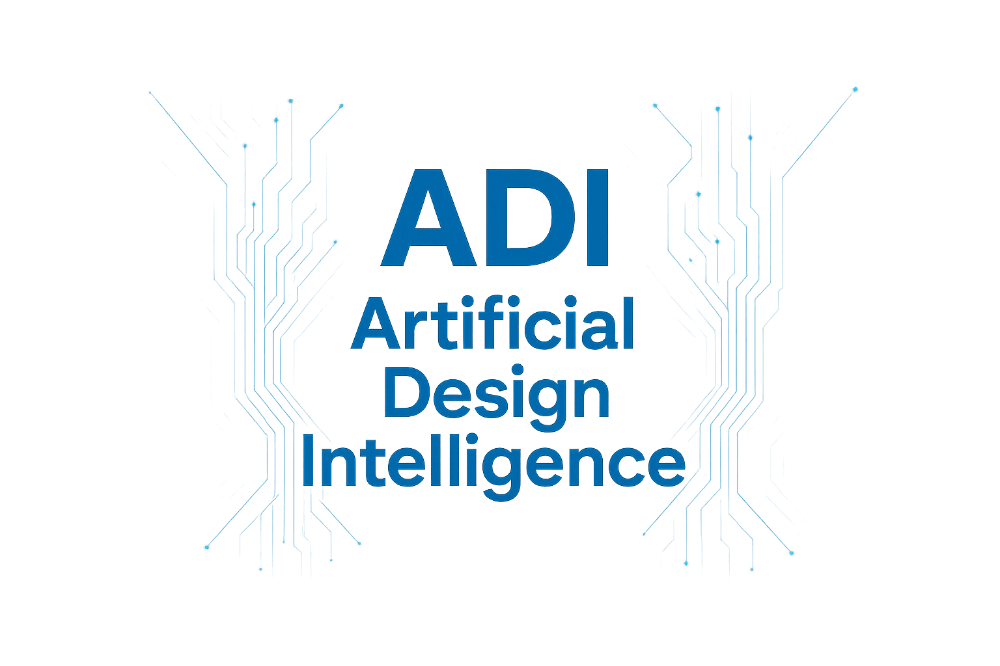
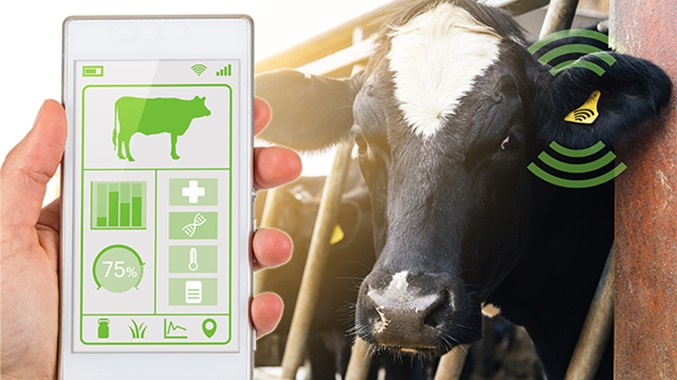
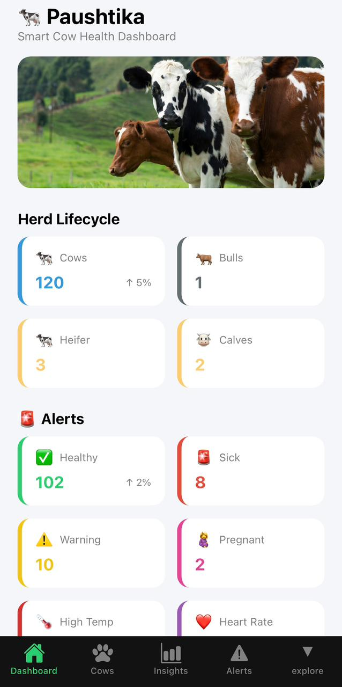
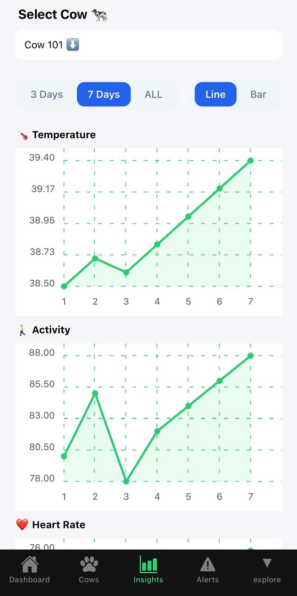
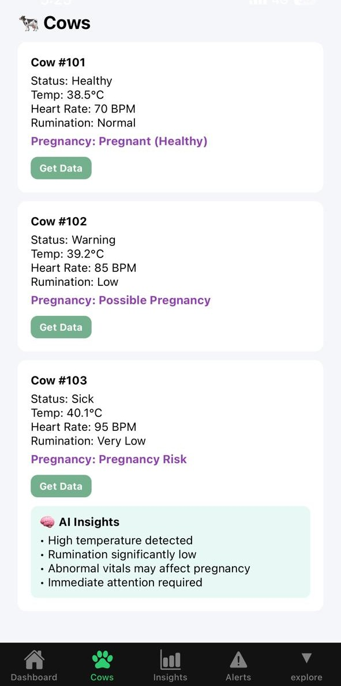
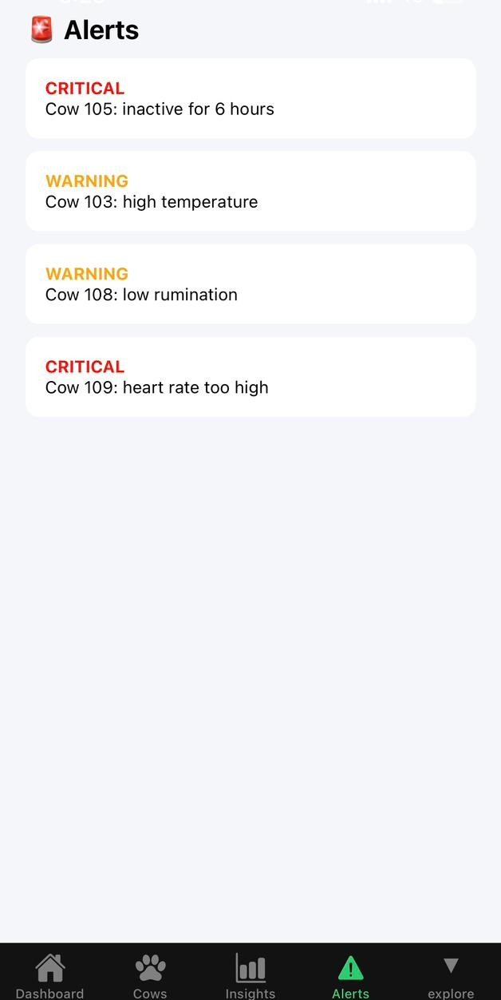

Technological Innovation through AI/ML & Cognitive Computing
Transforming technology with intelligent solutions that save lives, improve outcomes, and revolutionize human care


Transforming technology with intelligent solutions that save lives, improve outcomes, and revolutionize human care
At Adisver, we are pioneers in Artificial Design Intelligence (ADI) a next-generation fusion of AI, cognitive computing, and design thinking. we envision a world where technology empowers smarter, faster, and more personalized solutions across industries. We are committed to developing cutting-edge innovations that seamlessly integrate with real world needs bridging the gap between advanced technology and essential services. Whether in healthcare, agriculture, or beyond, our mission is to drive meaningful impact through intelligent, cognitive and adaptable, and accessible tech solutions.


At Adisver, we harness the power of cutting-edge technologies including artificial intelligence, machine learning, and cognitive computing to develop intelligent solutions that solve real-world problems across diverse sectors.
Our multidisciplinary team are experts in AI, ML and cognitive computing to build innovative, user-centric products that are both scalable and accessible.
We believe technology should empower people, drive smarter decisions, and create meaningful impact through practical, data-driven solutions.
Discover our cutting-edge solutions designed to transform healthcare

Smart cattle health monitoring band that revolutionizes livestock management through real-time health tracking and preventive care.
An intelligent baby feeding solution that tracks nutrition intake, monitors temperature, and provides insights for optimal infant care.
AI Cattle Health Monitor
Paushtika uses AI-powered monitoring to detect early health issues in cattle, enabling timely care, preventing disease spread, and improving milk productivity.
We provide you with an intuitive livestock monitoring dashboard that covers all aspects of your farm. You will be able to monitor the entire herd, from cows, bulls, heifers, and calves. This will help you keep track of the herd structure and use your resources effectively.
As for monitoring the herd's health, it monitors all relevant metrics of the livestock to find out the status of each animal - healthy, ill, or at risk. The system is able to diagnose diseases, like a rise in body temperature, or pregnancy.
It will also help you track the animals' activities regarding lactation. The dashboard will help you understand which animals are still lactating and which have gone through the dry period.


Here, we offer 24/7 monitoring of the cows to assist farmers in checking the well-being and behavior of the animals. All individual cows can be chosen for better monitoring rather than keeping track of the whole herd.
There is a chart indicating how body temperature fluctuates over time, helping farmers recognize if any of their cattle has fever or other health concerns by looking at abnormal trends.
Moreover, there is a chart illustrating how active each cow is and how fast the heart beats. These factors will allow farmers to evaluate whether an animal is healthy or sick.
Furthermore, there is an option to apply filters based on different time intervals. For instance, one may consider the period of the last three or seven days or view all the information stored in the database.
The module allows for an individualized monitoring of the cows by allowing farmers to see all vital information related to the cows' health such as their body temperatures, heart rates, and rumination rates.
It uses the information obtained from the vital information to classify whether a cow is healthy, likely pregnant, or at risk of any health issues.
Farmers can tap on any cow to get instant AI-based insights, highlighting health conditions and risks, enabling quick and informed decision-making.


This module includes a powerful 48-Hour Early Warning System that detects potential illness before visible symptoms appear by continuously monitoring vital signs and behavior.
The system tracks key parameters such as heart rate, activity levels, eating patterns, and temperature to identify abnormalities and generate timely alerts.
Alerts are categorized into critical and warning levels, allowing farmers to take immediate action and prevent serious health issues in advance.